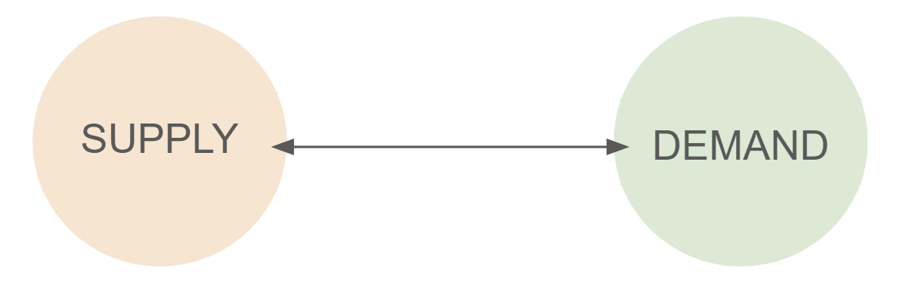
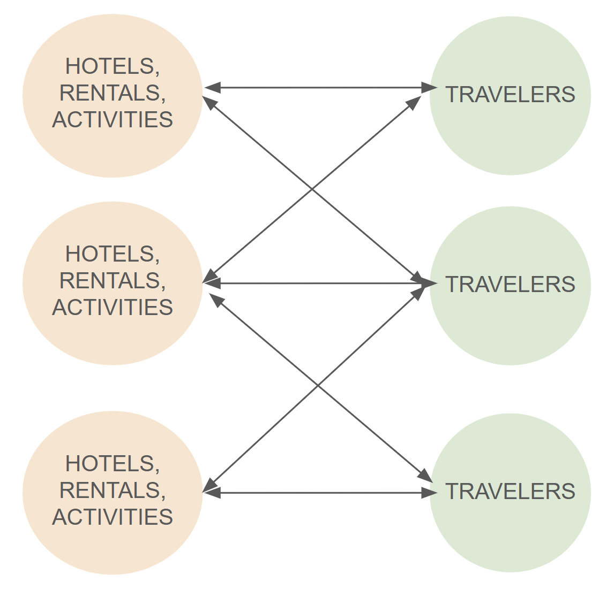
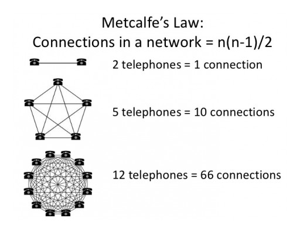
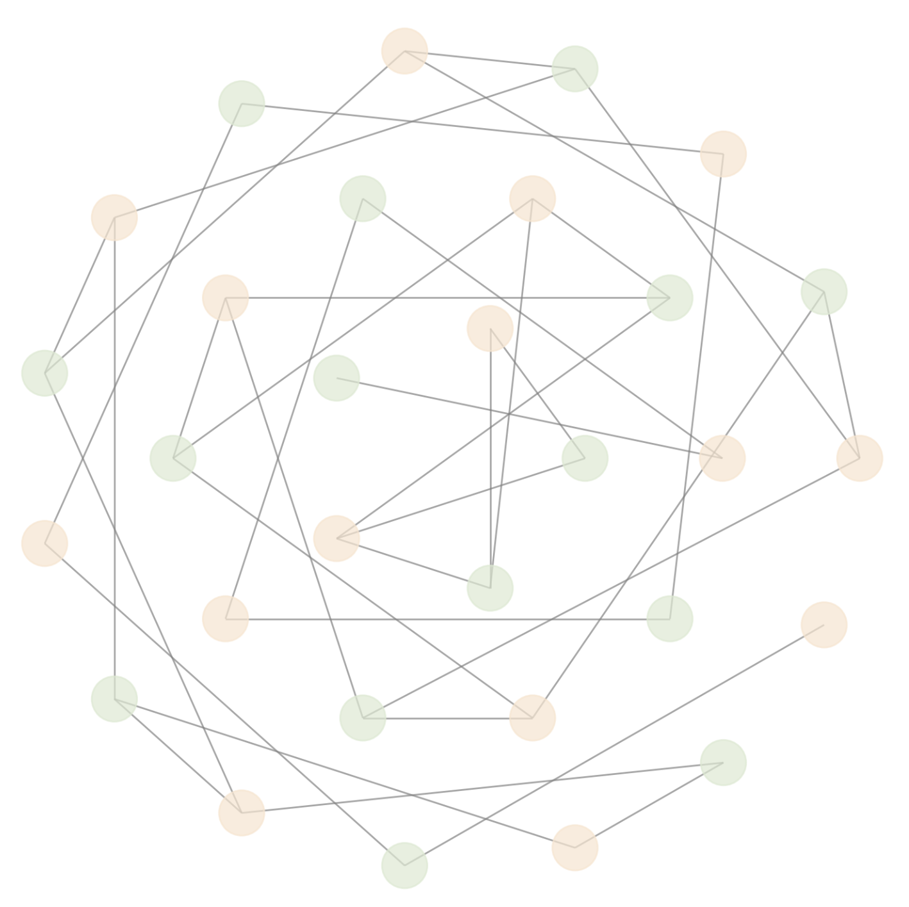
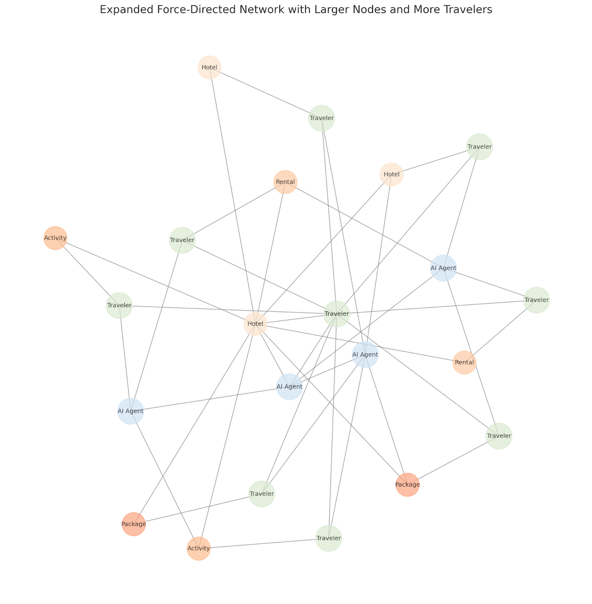

The way we book travel is broken—endless searches, overwhelming choices, and hidden biases. But a shift is happening. The rise of AI-powered Agents is transforming travel from a frustrating process into a seamless, intel
The way we book travel is broken—endless searches, overwhelming choices, and hidden biases. But a shift is happening. The rise of AI-powered Agents is transforming travel from a frustrating process into a seamless, intelligent experience. At TravelAI, we’re building an Agentic Network for the travel industry—an autonomous AI layer that anticipates what you need, negotiates on your behalf, and reshapes the way travel works. The future of travel isn’t search. It’s AI that works for you. This is The Third Voice.
It is not new or even inflammatory to state that the whole travel market is inefficient. But a Third Voice is emerging—AI Agents. These AI Agents are more than chat assistants and virtual concierges, they’re deciding, negotiating, and reshaping the entire travel economy. And soon, they will control the customer experience. The question is: who owns the Third Voice?
Another question: What happens when AI is no longer just a tool, but an active participant in travel? These concepts are what I will explore in this post, dare I say in the vernacular of ChatGPT, delve into what is coming next.
But I am getting ahead of myself.
Let’s start with a first principle – the role of technology is to reduce inefficiencies. Since Gutenberg’s printing press put a whole lot of monks out of work (and spawned a surge of new jobs and the information age in the process), the world has seen a flurry of efficiency-enabling advancements. After Gutenberg, you had the cotton ginny, the assembly line, the microprocessor, the internet itself, and many other innovations in between. Every one of them was created to add efficiency to existing processes.
AI is also about driving efficiency, and when efficiency is introduced, costs drop and more people can benefit. This is important to us because our goal at TravelAI is to see more people travel (and travel better). More efficiencies in travel will allow more people to travel and spawn all the benefits associated with a more mobile world. I have written about this before in what I call “40-year thinking.”
Most people in the travel industry have tried tasking the machines to create content, generate images, or automate work that could otherwise be done by a human. This is a great beginning for exploring AI Agents, but it is only a basic starting point.
An AI Agent is an autonomous system that analyzes data, makes decisions, takes actions to achieve specific goals, and most importantly, learns to improve its own efficiencies—without requiring direct human input.
Agentic Networks are when a series of these AI Agents work together to complete a common objective. It is this next stage, we believe, that creates the biggest shift in a generation – a shift that is now inevitable – and is why we are creating an Agentic Network for the travel industry.
To be sure, TravelAI’s vision for a travel-specific Agentic Network is a little different from some others, as is our understanding of the role The Third Voice will play in what is coming next.
To understand our vision of an Agentic Network, it is best to begin with a fundamental understanding of a marketplace and marketplace dynamics. In most two-sided marketplaces, you have Supply and Demand, so the marketplace connects those who want with those who have. For example, Uber connects Riders and Drivers while Etsy connects Handmade Goods to Shoppers. The market maker makes money by facilitating the introductions between these parties, and more often – by exploiting the inefficiencies.

When you participate in a marketplace, you are encouraged to focus on one side or the other. I have always used my background in performance marketing to emphasize the Demand side of a market and we have flourished over the years as a result.
The more Supply and Demand you have, the more value exists in the marketplace. To illustrate in travel-related terms, I will call ‘Demand’ by its more apt name of ‘Travelers’. Similarly, ‘Supply’ can be any accommodation type, activity, flight, cruise, package, etc. This is not a one-to-one relationship because all Travelers can interact with all Supply, and all Supply can connect to all Travelers.

This brings us to one of the least discussed aspects of an Agentic Network, people focus on the Agentic element rather than the fact that it is a Network, and thus is subject to a lot of the properties of a Network.
According to Metcalfe’s Law, the value of a network is proportional to the square of the number of its participants. In other words, as more users join the network, the number of potential connections (and thus the overall value of the network) grows dramatically.

The classic example used frequently when explaining the principles of a network is the telephone or fax machine. There is basic utility if two nodes are in a network, but it rapidly increases in value and utility with the introduction of each extra participant.
With many travelers and a lot of supply, immense value is created. As such, many major companies in the travel space have flourished.

But then along comes AI, and it changes everything.
In an Agentic Network, you get a third participant: the AI Agent. Unless you have created an adversarial network (and why would you do so in this case), you can align the AI Agents to the same objective as the other participants in the network.
In travel, we have a beautifully simple alignment: Travelers enter the network to find and book travel, while Suppliers participate in the network with the same objective, it is just focused on their supply. In TravelAI’s Agentic Network, the AI Agents we are building are also aligned to the same objective, helping Travelers find and book the “Best” travel for them from participating Suppliers, and do so more efficiently (lower costs, better value).
The primary difference from today’s world is that AI Agents are synthetic, meaning that an infinite number of AI Agents can be created to participate (and help) in the network. The more AI Agents you introduce into the network, the more value they provide to the network.

Within our Agentic Network, we are creating AI Agents for every City, Region, DMO, Hotel, Villa, Resort, Activity, Package, Tour, Cruise, etc. We are also creating AI Agents that help within, and across, the network, e.g. Ski.bot, Golf.bot, Pickleball.bot, and many more. Agents can provide specific knowledge or services, or be tasked with certain outcomes, such as monitoring prices, tracking flights, answering questions, and generally doing whatever is necessary to achieve the common objective of making the travel-related booking more efficient.
We envision a time soon when simple on-ramps will allow individual Suppliers to create their own Agents and publish them into the Network, just as individual travelers will have their own AI Agents acting on their behalf. No one person or company should be the creator of all the Agents.
The Third Voice represents a fundamental shift in how information is processed, mediated, and acted upon within the Agentic Network. The Third Voice is an AI power shift. It doesn’t wait for input, it makes (good, rapid, coordinated) decisions.
Traditionally, interactions and decision-making have been binary, either human-to-human or human-to-system. AI introduces a third entity, an autonomous Agent that influences, refines, and sometimes even challenges human perspectives. AI does not just relay information; it interprets, synthesizes, learns, and suggests.
The Third Voice in AI can be viewed through three key roles:
Soon, the AI Agents we introduce into an Agentic Network will be the Third Voice between travelers and suppliers. Instead of:
A TravelAI agent can be the mediating force, optimizing and personalizing results in real time. This shifts the interaction from:
In other words, AI removes the friction in travel discovery and reshapes the traditional transaction-based approach into a more organic, continuously-evolving system where outcomes are what matters.
The Third Voice participating in an Agentic Network will be more than a virtual concierge/assistant, it will be an active participant in transactions. This aligns Agentic AI and AI systems that:
There will be a huge step up in service when TravelAI does more than match travelers to hotels but actively negotiates the best deals in real-time, acting as a personalized, always-on, travel companion and allowing Suppliers to delight their customers.
For years, travel technology has been trapped in extremes:
We believe introducing a Third Voice changes this equation. AI Agents participating actively in a network are neither transaction engines nor human-like advisors, they are both. They blend precision with personalization, scanning millions of data points while curating experiences tailored to individual preferences, way beyond what a human could process. The result is travel experiences that are as seamless as an OTA, but as tailored as a seasoned concierge.
Also worth noting is that The Third Voice is not only about working on behalf of the traveler. It also needs to help the network participant who is the Supplier. One such example is that you should be able to introduce AI Agents that help a Supplier set the price for an activity or room night; optimize imagery to drive engagement; or rewrite/express content in different languages. As that neutral third party, the Third Voice shares the objective of Booking Better Travel.
Some might ask why we even need an intermediary anymore. If AI Agents become sophisticated enough, why wouldn’t travelers just connect directly with hotels, vacation rentals, and activities?
It’s a valid question and we believe the answer depends on who controls the AI layer. If every supplier runs its own AI and tries to keep visitors on their own site, then travelers will still have to navigate fragmented ecosystems. The Agentic Network is different, it acts as the intelligent connective tissue that ensures AI doesn’t become just another walled garden.
In other words, the AI future isn’t about removing intermediaries, it is about removing inefficiencies.
For thousands of years, the world’s bazaars existed as the precursor to today’s online marketplaces. They connected Supply and Demand, yet the market makers then and now exploited the inefficiencies often with high fees and gatekeeping. In this new world, we believe those who provide the platform to connect those who want with those who have (with AI Agents actively participating to achieve the same common objective) will be rewarded by the efficiencies they create rather than the inefficiencies they exploit.
In the next five years, AI Agents and The Third Voice won’t just be assisting travelers, they will be controlling the entire booking process. The key question will be who owns the Third Voice? If platforms from the large OTA incumbents dominate it, they will dictate what travelers see. If independent AI Agents emerge, they can democratize travel choices, ensuring personalization and helpfulness even over profit-driven recommendations.
I believe the Third Voice in AI will not be a tool — it will be an intelligence layer for the Agentic Web. It challenges, enhances, and optimizes human decision-making. In an Agentic Network whoever controls the Third Voice controls the customer experience. This is what TravelAI is building.
Soon, you won’t just search for travel, travel will come to you. Your AI Agent will know when you need a break, when you are available, and understand your personal needs before you do. It will find the best experience, get the best deal, book it, optimize it, and handle every detail in real time. You will then be able to share with other participants and just go.
This future is not decades away, it is unfolding right now. Thus, the key question should not be who will own the Third Voice, it should be, ”Will it serve travelers, or will it serve the incumbents?”
It’s tempting to assume that LLMs and AI providers like OpenAI and Google Gemini will dominate AI-driven travel, just as we may assume that large OTAs have the advantage. After all, they have the infrastructure and data at scale. However, their challenge is that LLMs are generalists while traditional OTAs suffer from The Innovator’s Dilemma. LLM providers synthesize data, but they don’t own the most accurate, real-time travel information. They still need specialized, high-quality structured data and real-time pricing, availability, and curated travel insights.
We believe this is where a travel-specific Agentic Network becomes indispensable. While LLMs will process language and generate recommendations, we think they will still need travel-specific AI Agents to power actual decision making. A good comparison may be Google itself, just as they relied on businesses to generate marked-up text and structured content filled with SEO-driven content, AI Agents will rely on structured travel data, and whoever controls that, controls travel in the Age of AI.
On the other side of the market, in a world where AI makes decisions, whoever controls the Agentic Network controls the traveler. And in such a world in which the value of the network increases at the square of the number of participants, including Travelers, Suppliers, and an unimaginable number of AI Agents – the value is infinite.
John Lyotier, CEO for TravelAI